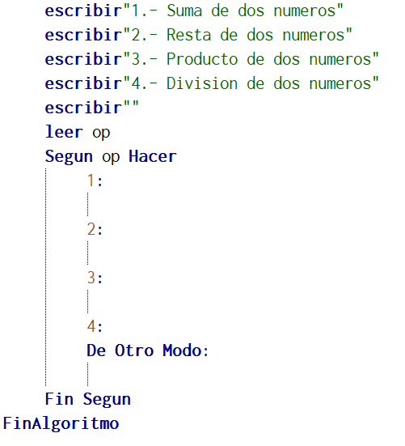
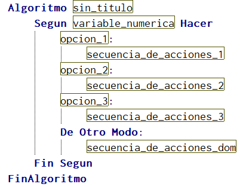

Pregunta de Elección Múltiple única respuesta Pregunta 1.-  Si se presiona la tecla 8 Respuestas Opción 1 El programa no entra en la estructura del según ya que la opción no existe Opción 2 El programa no entra en la estructura del según ya que no el algoritmo esta vacio Opción 3 El programa si entra en la estructura del según ya que la estructura esta sin errores Opción 4 El programa si entra en la estructura del según ya que se ubicaria en la opción "de otro modo" Retroalimentación Incorrecto Incorrecto Incorrecto En esta opción se presenta cuando el usuario digita un valor no contenido en las opciones. Solución Incorrecto (Retroalimentación) Incorrecto (Retroalimentación) Incorrecto (Retroalimentación) Opción correcta (Retroalimentación) Pregunta  2.- las opción 1 puede ser una expresión relacional? Respuestas Opción 1 Verdadero Opción 2 Falso Retroalimentación Incorrecto Generalmente las opciones son para números Solución Incorrecto (Retroalimentación) Opción correcta (Retroalimentación) Pregunta 3.- Solo se pueden realizar menús con la sentencia Según. Respuestas Opción 1 Verdadero Opción 2 Falso Retroalimentación Incorrecto Ya que se puede realizar con el condicional Si Solución Incorrecto (Retroalimentación) Opción correcta (Retroalimentación)